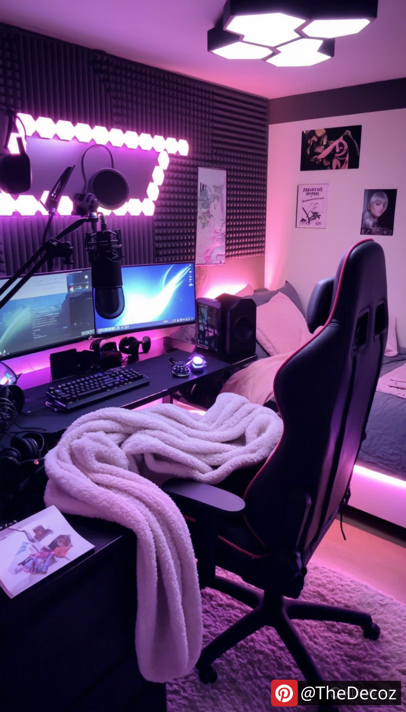

Tips for Room Decor Ideas for Teen Girl Streamers
Creating the perfect bedroom for a teenage girl who is also a streamer involves a blend of creativity, functionality, and personal expression. As streaming becomes increasingly popular among young people, it’s essential to design a space that not only looks great on camera but also serves as a comfortable and inspiring environment for gaming and content creation. Here are some innovative tips and room decor ideas to help you transform a bedroom into a stylish and functional streaming haven.
1. Choose a Color Palette
The first step in any room decor project is selecting a color palette. For a teenage girl streamer, consider colors that reflect her personality and style. Soft pastels, vibrant neons, or even a monochromatic scheme can work wonders. Use these colors for the walls, bedding, and accessories. A well-chosen color palette can create a cohesive look that enhances the overall aesthetic of the room.
2. Create a Dedicated Streaming Zone
Designate a specific area in the room for streaming. This space should be well-lit and free from distractions. A stylish desk with ample space for a computer, microphone, and camera is essential. Consider adding a comfortable gaming chair that complements the room's decor. Personalize this area with posters of favorite games, inspirational quotes, or artwork that resonates with her streaming brand.
3. Optimize Lighting
Lighting is crucial for both streaming and creating a cozy atmosphere. Invest in adjustable LED lights that can change colors and brightness. Ring lights are also a popular choice among streamers, as they provide even lighting for video content. Additionally, consider adding fairy lights or neon signs to create a fun and inviting ambiance that can be showcased during streams.
4. Incorporate Functional Storage
A clutter-free space is vital for both productivity and aesthetics. Incorporate stylish storage solutions that blend with the room's decor. Use decorative bins, shelves, and under-bed storage to keep gaming gear, books, and personal items organized. A pegboard can also be a creative way to display headphones, controllers, and other accessories while keeping them easily accessible.
5. Personalize with Wall Art
Wall art is an excellent way to express individuality. Encourage the use of framed prints, canvas art, or even a gallery wall featuring favorite games, quotes, or personal achievements. Consider creating a backdrop that can be featured in streams, such as a wall covered in posters or a tapestry that reflects her interests.
6. Add Comfort with Textiles
Comfort is key in a streaming setup. Layer the bed with cozy blankets, decorative pillows, and a stylish duvet cover that matches the room's theme. A soft area rug can also add warmth and texture to the space. These textiles not only enhance comfort but also contribute to the overall aesthetic, making the room more visually appealing on camera.
7. Tech Integration
Incorporate technology seamlessly into the room decor. Use cable management solutions to keep cords organized and out of sight. Consider a multi-functional charging station that blends with the decor. Smart home devices, such as voice-activated lights or speakers, can also enhance the streaming experience while adding a modern touch to the room.
8. Create a Cozy Reading Nook
In addition to streaming, it’s important to have a space for relaxation and creativity. A cozy reading nook with a comfortable chair, soft lighting, and a small bookshelf can provide a perfect escape. This area can also serve as a backdrop for casual streams or chats with followers, adding variety to the content.
9. Showcase Achievements
Encourage the display of achievements, such as awards, certificates, or fan art. This not only adds a personal touch to the room but also serves as motivation. A dedicated shelf or wall space can be used to showcase these accomplishments, making them a focal point in the room.
10. Regularly Update the Decor
As interests and trends change, so should the room decor. Encourage her to regularly update the space with new artwork, accessories, or seasonal decor. This keeps the environment fresh and exciting, both for her and her viewers.
Conclusion
Designing a bedroom for a teenage girl streamer is an exciting opportunity to blend personal style with functionality. By incorporating these tips and room decor ideas, you can create a space that not only looks great on camera but also serves as a comfortable and inspiring environment for gaming and content creation. Remember, the key is to reflect her personality while ensuring the room meets her streaming needs. Happy decorating!
